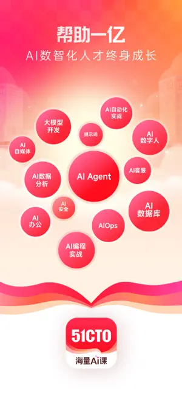

用51CTO学堂搭一条靠谱的IT学习路线：从零基础到能干活的实操指南
51CTO学堂是国内老牌IT技术学习平台，课程覆盖软考认证、大模型开发、智能运维、后端云原生等热门赛道。这篇教程带你从零注册选课到形成稳定学习节奏。
这篇教程结束时，你应该能独立在51CTO学堂上搭一条适合自己当前阶段的学习路线——知道去哪找课、怎么选课不踩坑、学完怎么落地。
准备：先搞清楚自己要什么
51CTO官网展示得很清楚，它不是那种"刷两节课就能跳槽"的速成平台，而是一个体系化的IT技术培训库：视频课程为主，配套直播冲刺、精培认证、社区互助，覆盖了从初级到高级的完整技术链路。
在动手之前，先想清楚两个问题：
- 你现在处于什么阶段？——零基础入门 / 有一定基础想升级 / 冲着某个认证去
- 你要解决什么具体问题？——找一份开发工作 / 给现有技能加AI能力 / 考个软证书评职称
这两个答案直接决定你后面选什么方向、花多少钱、投入多少时间。
第一步：注册新账号，领好礼券再动手
先去51cto下载装个PC客户端或移动端APP，再注册新账号也行，或者直接用网页版。51CTO对新用户的礼遇相当实在——每月1107元礼券，还有新课限时0元活动。别急着看完一节课就冲动下单，先把礼券领好，后面选课时能省不少。
注册完后进个人中心，把邮箱和手机号都绑定好，这样直播课的开播提醒、作业批改通知才能准时收到。

第二步：用课程分类快速定位你的方向
51CTO学堂的课程方向标签做得挺细，别瞎逛，直接从分类页进。目前几个值得重点关注的方向：
- AI开发与大模型：LLM架构、Prompt工程、RAG检索增强、多模态——这是当前更新频率最高的赛道，零基础也能从Vibe coding入门
- 后端开发 / 云原生：Java、Python、Go三大主力语言都有体系化课程，配合Kubernetes、微服务架构，适合想走后端路线的
- 智能运维与基础设施：传统运维工程师往AI转的首选，AIOps主题把大模型和运维日志处理结合起来
- 软考认证：从初级程序员到高级系统架构设计师，备考课程覆盖全程，直播冲刺课时效强
如果你还是拿不准，可以去官网的课程分类页逛一圈，把上面四个方向的课程列表各扫一眼，看哪个方向的课程标题让你"想点进去看"——直觉往往比别人给你贴的标签更准。
第三步：选课的正确姿势——三查一验
选课时别急着买，按这个顺序走一遍：
一查免费试看。51CTO的大部分付费课都提供前几节的免费试看。你要听的不是讲师讲的技术内容本身，而是：讲语速你跟得上吗？举例方式是你喜欢的类型吗？录播课的画面和弹幕互动（如果有的话）会不会让你分心？
二查课程大纲。别只看"50小时学会XXX"这种标题。点进详细页面看章节列表——有没有项目实战环节？实战项目是演示性质还是让你跟着动手写代码？有多少节是讲"环境搭建"的废话、有多少节是直接啃难点的硬货？
三查讲师履历。51CTO的讲师库里有不少大厂在职架构师、行业技术专家。但也不是资历越深越好——有些讲师理论功底很强但讲得像念论文，反而不如一线工程师讲得接地气。试看那几节课里你应该已经感受到讲师的风格了，履历只是确认一下他的技术背景是不是你想学的方向。
最后一步：用领好的礼券结算。新用户礼券一般有使用范围限制，注意看券的有效期和适用课程。
第四步：精培认证体系怎么用
51CTO有一套精培认证体系，采用讲师+助教+班主任的三位一体模式。如果你是冲着软考认证、或者想在半年内系统性完成一个方向的学习，精培认证班值得考虑。
具体怎么操作：选好你要考的认证科目（比如系统集成项目管理工程师），找对应的精培班——一般会包含录播基础课、考前冲刺直播课、历年真题练习、助教答疑通道，课程大纲里的知识点细节在51cto文档里也能查到补充讲解。报名后班主任会拉你进专属学习群，每周有学习进度检查点。
第五步：社区不能丢——软考社区和技术圈子
51CTO有独立的软考社区，里面是备考者互相交流的地方，有人分享考试心得、有人上传历年真题的解析、有人组队冲刺。别小看社区力量——很多你卡了三天的问题，社区里可能有人刚踩过同样的坑、写了一篇踩坑笔记。
进社区的方式很简单：搜rk.51cto.com，用你的学堂账号登录就行。发帖子之前先搜一下，大概率已经有人问过同样的问题了。
常见卡点
卡点一：方向选不准，买了课没学进去
别硬扛。如果学了三周还没进入状态，很可能不是你不够努力，而是方向根本不适合你。及时止损，把课程换成另一个方向的试看，再认真逛一遍分类页。51CTO的礼券有效期一般够你折腾两三轮。
卡点二：录播课太长看不下去
试试"冲刺直播课 + 录播片段"的组合。直播课节奏快、有互动感，适合考前攻坚；录播课用来补直播里没讲透的知识点，不用从头看到尾，按章节跳着看就行。
卡点三：想冲证又想练实战，时间不够用
先认证、后实战。软考认证本身有强制的知识体系要求，学完再用企业级项目实战课把知识串成动手能力，效率比两头同时抓高得多。51CTO的精培班就是按这个逻辑设计的——备考课打基础，实战项目练输出。
进阶一句话
学完基础课程之后，别停在"能做题能看代码"的层面——去大模型课程的GraphRAG、AIOps智能运维这些前沿方向逛一逛，看看AI怎么和你已有的技能结合。当前后端、运维、开发这些传统方向的课程都在往AI能力延伸，这一步走对了，你的技能包和只会传统技术的人就拉开了差距。